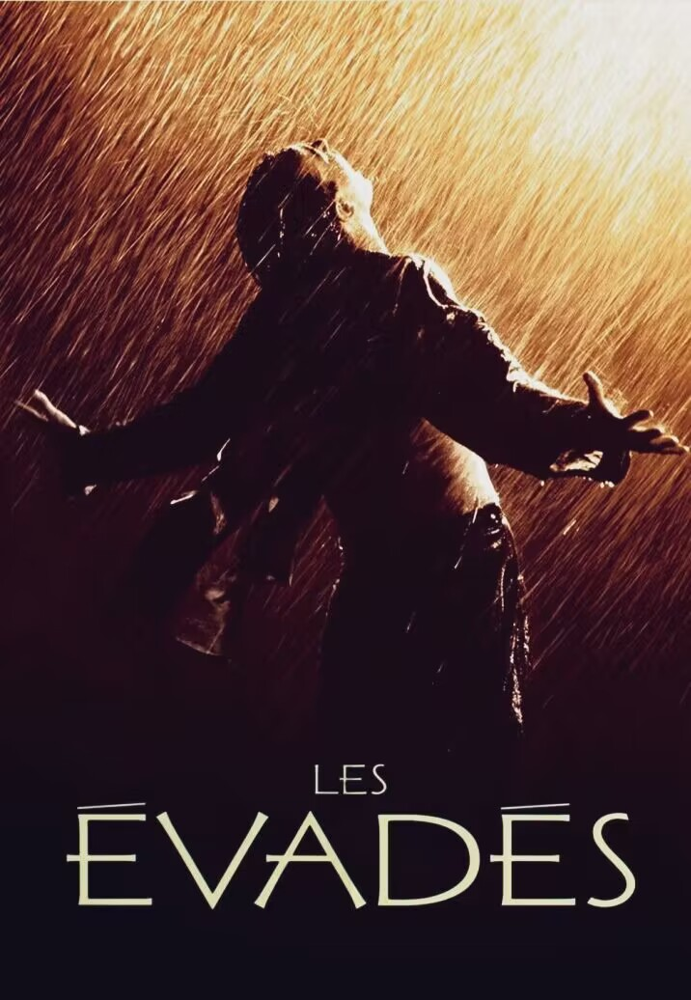

《肖申克的救赎》

1994年，被誉为上帝想看电影的一年，因为有36部来自世界各地的电影横空出世，且都为日后的无法超越经典之作。
其中，《阿甘正传》、《低俗小说》和《肖申克的救赎》在第66届奥斯卡颁奖典礼上三足鼎立，不分伯仲。
《阿甘正传》当之无愧的捧得奥斯卡金像奖、最佳男主角等12项大奖，而《低俗小说》以他独特的环状结构和多角度叙事手法拿走了最佳原创剧本的桂冠，唯独《肖申克的救赎》在十项提名里颗粒无收。村上春树曾在他的小说《挪威的森林》中写到，真正的艺术，是经得起时间的考验的，且任何年龄段都能从中获取共鸣的。 《肖申克的救赎》在电影的艺术性和文学性上取得了近乎完美的平衡，从电影欣赏角度来说，奥斯卡的失利和时间的考验，反倒让它背后所蕴含的人文底蕴得到了完全的展露与升华，使其成了影史上当之无愧的无冕之王。
电影中，有一个叫布鲁克的老头，年轻时进了监狱，关了好多年。 他本应是憎恨监狱，渴望逃离的，但当他得知自己刑满释放时，却做出了一个惊人的举动。 为了能继续留在监狱里，一向温和的他，居然企图用举刀杀人的方式再次犯下罪行，以求在监狱中继续服刑。 出狱之后，也无法适应社会，郁郁而终。 瑞德在得知布鲁克自杀后，说: “监狱里的高墙实在是很有趣。刚入狱的时候，你痛恨周围的高墙；慢慢地，你习惯了生活在其中；最终你会发现自己不得不依靠它而生存。这就是体制化。”
正如许多人在大学毕业后，选择考公务员或进入体制，后来，就会发现他们的谈吐、言行逐渐趋于一致，他们的生活、所关注的东西逐渐处于同一维度，虽各自沉浮，生活却难以拓展。 我父亲有很多同学都是这样，进入体制后过得顺风顺水，一旦退休，就变得十分暴躁，不断地念叨着这大半生的可怜功绩，有种人走茶凉的凄苦。
体制化的真实会让你不堪一击，就像被圈养的动物，一旦摆脱枷锁，放逐野外，就会因缺乏必要的生存技能，遭受灭顶之灾。 再举个例子，监狱里有固定的上厕所时间，影片末尾，瑞德发现没有监狱的口令，自己连尿都尿不出来，这是一件十分荒谬的事。 可见，体制化甚至可以内化到了人的身体，让你长期沉浸于表面的稳定，剥夺自我意识，对一切不合理的制度习以为常，然而，一旦形成无形的监狱，便会扼杀一切对自由与希望的向往。
监狱长在罪犯入狱之前便说:“把思想交给上帝，把身体交给我。” 是否每个人都曾有违背自我志愿，迫于社会压力而逆来顺受的时候呢？ 有人说，《肖申克的救赎》只是复刻了《基督山伯爵》的越狱传奇，我不认同，肖申克的现实性不亚于生活，人人都处于或大或小的监狱，都服从着或多或少的体制，只是因所处环境而丧失了突破集体桎梏的能力。
安迪在入狱之后，并未选择和瑞德一样，去尝试假释，而是和周围的环境慢慢周旋，然后找出破绽，各个击破。 他本来是一个很厉害的银行家，所以在监狱里，他帮助道貌岸然的典狱长洗黑钱，并且为监狱其他狱警谋取各种钻漏洞的非法收入。 他利用自己在金融方面的才华和本领，最大化地展示了自己的价值，尽可能地为自己找到一个有利的位置，从而为越狱创造了千载难逢的机会。 我们不难看出，即使在监狱之中，安迪始终也以一种高姿态出现在每个恶劣的处境之中，曾有过狱卒的毒打，混混的刁难，也有过完全绝望的时候，唯一能证明他清白的证人被典狱长暗杀，与此同时，正在承受着三个月寒如死寂的禁闭，就在这样的情况之下，他依旧密谋着惊天大逆转。 所以说，安迪并非自命清高不妥协，而恰恰在于会审时度势，谋划布局。
本片并未高谈阔论人生哲理，也无过分吹捧自由可贵，而是以一种潜移默化的方式，让观众即使在黑暗的监狱生活中，也能感受到自由之光。 记得有一幕，安迪在房顶上为十几个犯人朋友每人争得了两瓶Tiger啤酒。 安迪或许会想，在长达大半生的牢狱中，拥有个人意识与短暂自由便是如此，坐着喝啤酒，阳光洒在肩头，仿佛是个自由人，感觉就像在装修自己家的屋顶。
监狱充满了压抑和晦暗，每个犯人都如同被奴役的机器，人生而自由，但是当长期丧失自由后，人就会再也意识不到这项人生基本权利。 安迪扩建图书馆，带领狱友学习、欣赏唱片，这些艺术，修养的建设，都为了重新唤起众人对于自由的意识。 影片中有一场戏是安迪冒着触犯禁忌的危险，为所有囚犯送上一份充满自由气息的豪礼：在监狱喇叭里播放《费加罗的婚礼》。 优美的女声从扩音喇叭里流淌出来，狱警、囚徒们都被莫扎特动人心魄的音乐深深感染。 音乐消灭了他们的阶级差别，让所有人都感受到一样的、来自上帝的馈赠。 那一刻，无论你是狱警还是囚犯，你受到的艺术感染是同样的。 安迪之所以如此重视知识文化对人的作用，是因为他深知，正是书籍、音乐、知识修养的熏陶才得以让他突破了现实的困境。
“有些鸟儿是不能关在笼子里的，他们的羽翼太耀眼了。” 安迪不可思议的谋划和隐忍，在自由与希望的驱使下，以破釜沉舟的方式，用小锤子挖掘地道，足足挖了二十年。 最终爬过五百码的污水管道，忍受着常人无法想象的恶臭，一边吐着，一边逃离了肖申克。 如果说，牢房象征女人的子宫，在这个子宫里，安迪日日夜夜孕育着不屈的灵魂，那么长长的监狱污水道，就是母亲的产道，与初生的婴儿一样，他的再一次生命，也必须通过污秽、恶臭、黑暗、挤压，破除降生时的重重艰难险阻，获得生命。
过想要的生活，本来就是件痛苦的事，它需要你去忍受无数的屈辱与磨难。 安迪战胜的，不仅仅是这个世界的规则，其实还有他自己性格里所有的弱点，懒惰、恐惧和自私，用自己全部的勇气和智慧，站在世界之颠，凌驾于的规则之上，或许，这才是真正的自由。
《肖申克的救赎》是专属于安迪的传奇故事，每一个处于体制之中的我们，是否考虑过人生旅途的意义？ 生活中不乏有人因为没有毅力而失败的例子，却没有几个人能和安迪一样，得到自己想要的生活。 从某种意义上来说，每个人皆处于肖申克之中，可以逃离的人却寥寥无几，人生的越狱，注定是最孤独的一趟旅程。